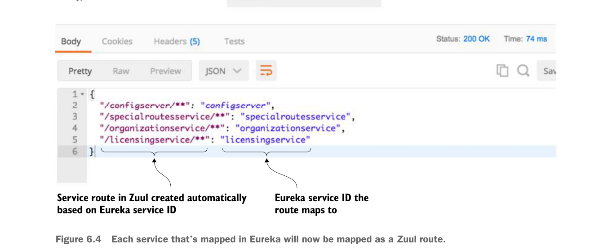

6.3.2 Mapping routes manually using service discovery
Zuul allows you to be more fine-grained by allowing you to explicitly define route mappings rather than relying solely on the automated routes created with the service’s Eureka service ID. Suppose you wanted to simplify the route by shortening the organization name rather than having your organization service accessed in Zuul via the default route of /organizationservice/v1/organizations/{organization-id}. You can do this by manually defining the route mapping in zuulsvr/src/main/resources/application.yml:
zuul:
routes:
organizationservice: /organization/**By adding this configuration, you can now access the organization service by hitting the /organization/v1/organizations/{organization-id} route. If you check the Zuul server’s endpoint again, you should see the results shown in figure 6.5.